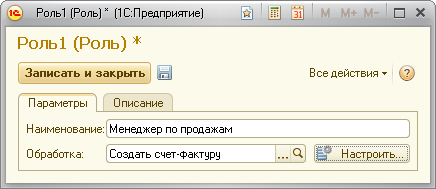

Роль – это одна обработка с указанными значениями настроек. В дальнейшем вы сможете использовать эту Роль для работы в рамках любого Сценария.

Следует указать наименование роли, выбрать обработку, которая будет выполняться данной ролью и нажать кнопку «Настройки». Будет открыта форма настройки обработки, которая позволит вам указать значения всех настроек, предусмотренных для этой обработки во время ее программирования.